Atmósferas y Habitabilidad
Una atmósfera es la única ventana que tenemos hacia un exoplaneta que jamás visitaremos. Esta clase enseña a leer la luz que la atraviesa: desde la física de un gas que se enrarece con la altura, hasta detectar agua, CO2 y oxígeno a cientos de años luz, y preguntarnos qué hace habitable —o habitada— a una roca lejana.
No podemos meter una sonda dentro de un exoplaneta. Lo único que llega de él es luz, y casi siempre mezclada con la de su estrella, millones de veces más brillante. Toda esta clase es un ejercicio de ingeniería de la medición: aprender a restar dos espectros casi idénticos para quedarnos con la huella tenue de la atmósfera del planeta. Empezamos por la física básica —la ley de gases ideales y la altura de escala que explica por qué la presión cae exponencialmente con la altitud—, pasamos por cómo se observa (tránsito primario en transmisión, tránsito secundario en emisión), interpretamos las bandas moleculares de agua, CO, CO2 y metano, y vemos los resultados reales de Spitzer, Hubble y el James Webb. Cerramos con la pregunta que ordena todo el campo: la habitabilidad —dónde puede haber agua líquida, qué es una biofirma, y por qué el oxígeno de la Tierra es inequívocamente biológico aunque en otro planeta podría no serlo—.
Física de una atmósfera: gas ideal y altura de escala
Por qué la presión cae exponencialmente al subir, y qué controla la velocidad de esa caída.
Una atmósfera es un gas sostenido por la gravedad del planeta. Su comportamiento de partida es la ley de gases ideales, (o, por unidad de volumen, ). La temperatura no es más que una medida de qué tan rápido y desordenadamente se mueven las moléculas: si subes la temperatura, chocan más fuerte contra las paredes —o entre ellas— y la presión aumenta. Es la misma intuición de inflar un globo o una rueda de auto.
Al subir en altura , hay cada vez menos gas encima apretando, así que la densidad y la presión disminuyen. Combinando el equilibrio hidrostático con la ley de gases ideales aparece una escala natural, la altura de escala :
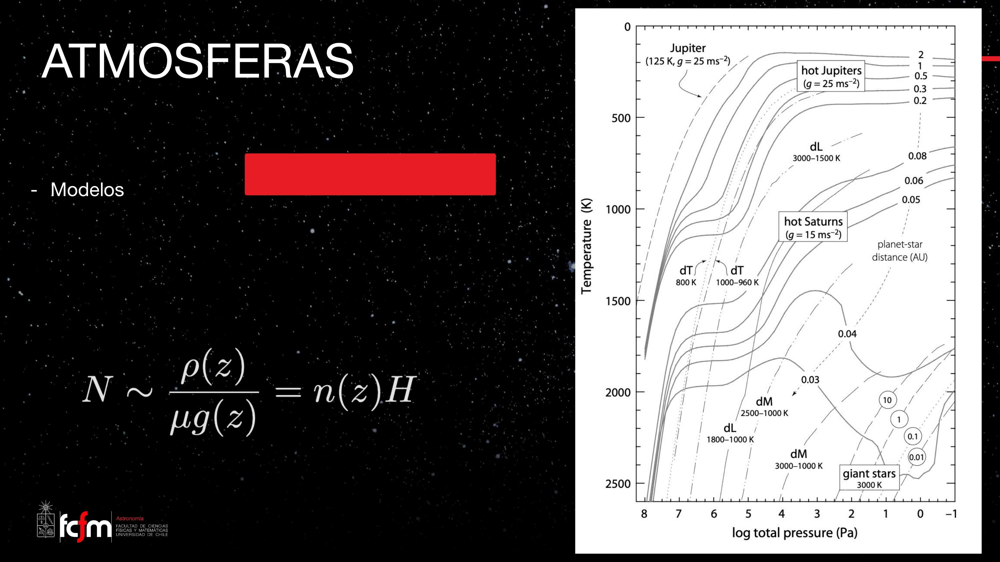
Para construir el perfil de presión y temperatura vs. altura se suelta un globo de helio con una cajita del tamaño de un envase de leche: lleva electrónica, una antena y sensores de temperatura, presión y humedad. Sube emitiendo datos hasta ~30 km, donde revienta y cae. El profesor visitó un centro en el Círculo Polar Ártico (Finlandia) donde estos globos se lanzaban automáticamente cada hora. Para planetas del Sistema Solar usamos sondas; para exoplanetas, solo la luz.
La altura de escala es la constante de tiempo de un decaimiento exponencial, idéntica al de un circuito RC o al half-life de un sistema. Cuando un fenómeno cae como , basta un solo parámetro () para describir toda la curva. Pensar en cuántas constantes caben en tu rango de medición es justo lo que define el rango dinámico de un sensor.
Capas atmosféricas y perfiles de temperatura
La curva de temperatura vs. presión define la troposfera, la estratosfera y las demás capas.
Si seguimos cómo cambia la temperatura a medida que cambia la presión dentro de una atmósfera, podemos dibujar un perfil y, con él, definir capas. En la Tierra la temperatura primero baja al subir (troposfera); cuando vuelve a subir en altura empieza la estratosfera (capa de inversión), y así sucesivamente. Estas curvas sirven para predecir el clima, ubicar dónde se forman las auroras y deducir la composición.
En distintos libros el gráfico temperatura–presión aparece «dado vuelta»: a veces la presión crece hacia abajo, a veces hacia la izquierda. El profesor advierte explícitamente sobre esta inconsistencia. Regla de oro: antes de leer cualquier espectro o perfil, mira primero las unidades y los límites de los ejes. Lo que está «más profundo» (cerca de la superficie) siempre tiene mayor presión.
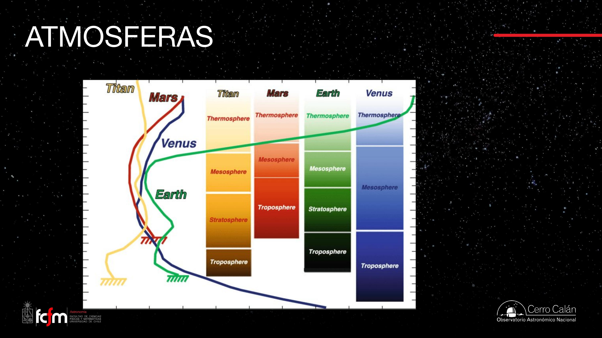
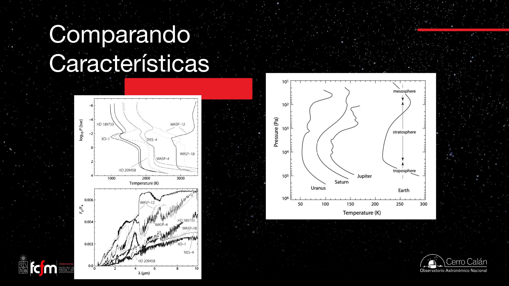
Espectros de atmósferas del Sistema Solar
Venus, la Tierra y Marte como casos «con respuesta conocida» para calibrar el método.
Antes de mirar exoplanetas conviene practicar con los planetas que sí conocemos. Apuntando instrumentos desde satélites u observatorios a Venus, la Tierra y Marte obtenemos sus espectros. En el visible y el infrarrojo cercano domina la luz solar reflejada; más al infrarrojo, el planeta brilla por sí mismo como un cuerpo negro (la Tierra a ~300 K) sobre el que aparecen bandas de absorción.
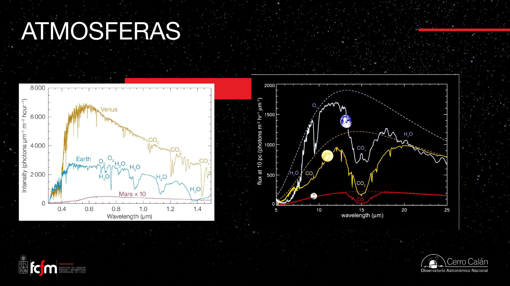
Un átomo de hidrógeno absorbe fotones de energías discretas (saltos de niveles electrónicos). Una molécula, en cambio, además puede vibrar, flexionarse y rotar: cada modo abre una gama de energías capaces de excitarla. Por eso vemos bandas anchas en vez de líneas finas. Esas bandas son la firma química de la atmósfera, y se calibran en laboratorio.
A la resolución típica de exoplanetas solo distinguimos moléculas (agua, CO, CO2, metano), no elementos finos. Con la Tierra alcanzamos resolución «exquisita» y vemos hasta mapas de contaminantes (metano, CO). De Venus o Marte sabemos poco más que «hay mucho CO2». Detectar vida en una atmósfera lejana exigirá un salto enorme respecto de lo que hoy es posible.
Cómo se observa: transmisión y emisión
El truco maestro: restar dos espectros casi idénticos para aislar la atmósfera del planeta.
La estrella es muchísimo más brillante que el planeta y ambos caben sobre un mismo píxel: el detector recibe la suma. La estrategia consiste en tomar espectros en dos momentos de la órbita y restarlos, de modo que la enorme contribución estelar se cancele y quede solo el aporte del planeta. Hay dos geometrías complementarias:
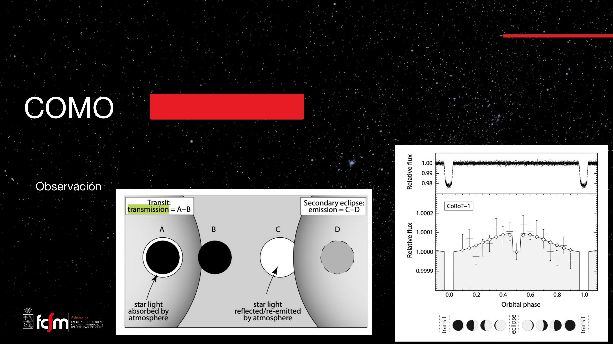
Tránsito primario → transmisión
Justo antes del tránsito se toma el espectro de la estrella sola (caso B). Durante el tránsito (caso A), una fracción de la luz pasa rozando la atmósfera del planeta y se absorbe selectivamente. La resta entrega el espectro de transmisión: la atmósfera proyectada como un anillo absorbente. La señal es proporcional al área de ese anillo frente al área de la estrella.
Tránsito secundario → emisión
Cuando el planeta pasa por detrás de la estrella, dejamos de ver su cara iluminada; antes y después la vemos «llena», como una luna llena. La resta entre el momento con planeta visible y el momento de eclipse aísla la luz emitida/reflejada por el planeta. Transmisión y emisión muestran las mismas especies, pero una «en negativo» de la otra: lo que falta en una es lo que sobra en la otra.
Es una detección diferencial idéntica a la de un amplificador lock-in: la señal útil (el planeta) está enterrada bajo una portadora gigante (la estrella). Modulando con el tránsito y restando dos estados, el ruido común (la estrella, el instrumento) se cancela y emerge una señal de partes por millón. Saber cuándo ocurre el tránsito y tener el espectrógrafo listo es puro timing y sincronización.
Procesos radiativos: la nube selectiva
Una analogía simple para entender por qué la transmisión y la emisión son «negativos» entre sí.
El profesor resume el corazón de Procesos Radiativos (un curso troncal de cualquier doctorado en astronomía) con una imagen: una nube de gas entre nosotros y una estrella. El gas tiene preferencia por ciertas longitudes de onda. Es como un niño que solo atrapa las pelotas azules: deja pasar todos los demás colores, pero las «pelotas azules» (fotones de esa longitud de onda) las absorbe, las retiene un instante y luego las relanza en cualquier dirección, perdiendo memoria de dónde venían.
- En transmisión (miramos a través de la nube hacia la estrella): vemos la luz estelar menos los fotones azules que la nube se quedó y dispersó → líneas de absorción.
- En emisión (miramos la nube desde un lado, sin la estrella detrás): solo nos llegan algunos de esos fotones azules redirigidos → líneas de emisión.
¿Se absorben todos los fotones de esa longitud de onda? Depende de la densidad de la nube. Si es ópticamente gruesa, absorbe prácticamente todo; si es ópticamente delgada, deja pasar una parte. Además, en distintas longitudes de onda «sondeamos» distintas alturas de la atmósfera: las longitudes más largas penetran capas más profundas (igual que el infrarrojo atraviesa el polvo). Por eso un mismo planeta «se ve diferente» según el color en que lo observemos.
Modelos de atmósferas de exoplanetas
El espectro «de fábrica» que entrega el computador, y por qué el problema está sub-restringido.
Como casi no tenemos datos directos de composición, se construyen modelos: se le pide al computador «un planeta de tantas masas de Júpiter, a tal temperatura, a tal distancia de su estrella, con esta composición» y entrega un espectro detalladísimo con bandas de agua, metano, amonio, etc. Esos espectros se comparan con las pocas observaciones disponibles. El profesor insiste: son educated guesses (conjeturas informadas), no inventos arbitrarios, pero dependen fuertemente del modelo.
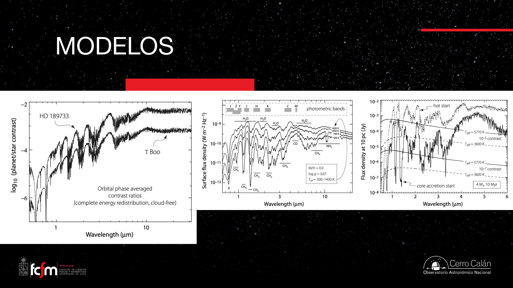
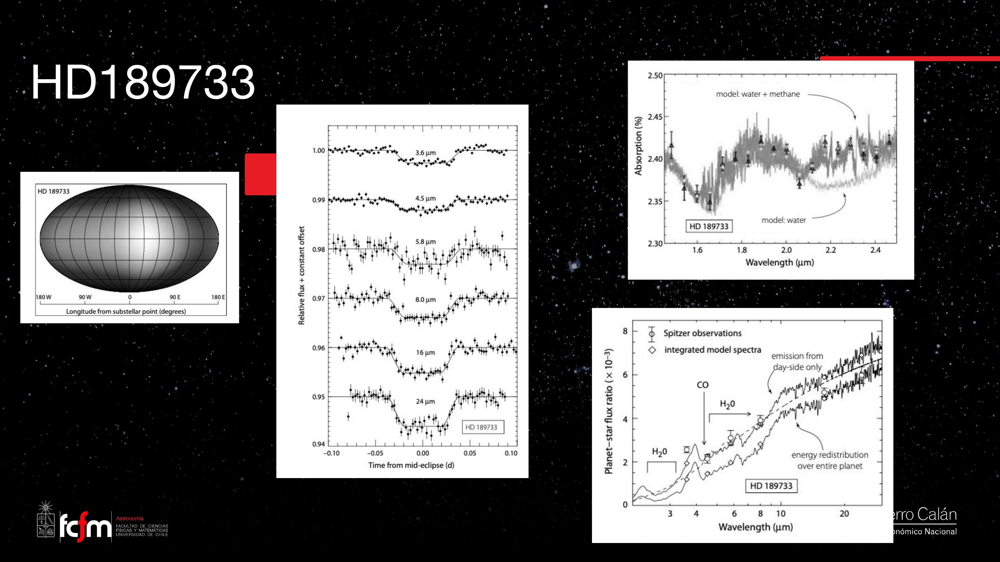
A diferencia de un sistema sobre-restringido (más ecuaciones que incógnitas), aquí hay más incógnitas que datos. Podrías inventar un planeta de puro nitrógeno o de argón y «en una de esas» funcionaría. Lo que acota el modelo es la física que esperamos: composiciones parecidas a Júpiter y Saturno, temperaturas coherentes con la distancia a la estrella. La gracia del juego no es «adivinar» sino descartar: p. ej. un modelo con agua predeciría una banda que no se observa, así que se elimina.
Es ajuste de modelos por forward modeling: generas el espectro sintético, lo pasas por la «respuesta del instrumento» (los filtros, que degradan la resolución) y comparas con los datos. El profesor describe exactamente un likelihood mal condicionado: muchos parámetros libres, pocas ligaduras. La solución no es una sola respuesta sino una región de modelos compatibles —pura inferencia con priors físicos—.
Espectroscopía de transmisión y espectrofotometría
Cuando no alcanza para un espectro fino, se mide el tránsito «color por color».
Muchas veces no se puede obtener el espectro completo durante el tránsito. La alternativa es la espectrofotometría: medir la profundidad del tránsito en varios filtros (varios colores) por separado y armar un espectro de muy baja resolución. Si en la longitud de onda de una banda de metano el planeta «tapa un poco más» de luz, es indicio de que esa molécula está presente.
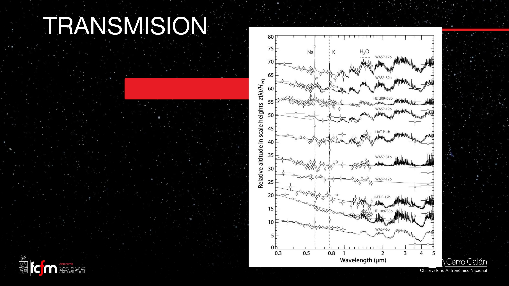
A veces el espectro viene en flujo físico (W m−2 µm−1), pero muchas veces es simplemente la razón (lo que se obtiene de restar dos espectros). Para convertir a flujo hay que saber cuánto ilumina la estrella en ese punto. El profesor repite: mira siempre la unidad antes de interpretar.
Clima, albedo y vientos
La curva de fase del planeta delata nubes, redistribución de calor y vientos supersónicos.
Si seguimos el brillo del planeta a lo largo de su órbita (su curva de fase) aprendemos sobre su clima. El albedo es la fracción de luz que refleja: un planeta cubierto de nubes refleja más y se ve más brillante cerca del eclipse secundario. Un dato concreto de la clase: WASP-43b (y casos como HD 209458b) tienen albedo de Bond ≈ 0,18 —reflejan ~18% de la luz; bastante oscuro, aunque hay materiales aún más negros—.
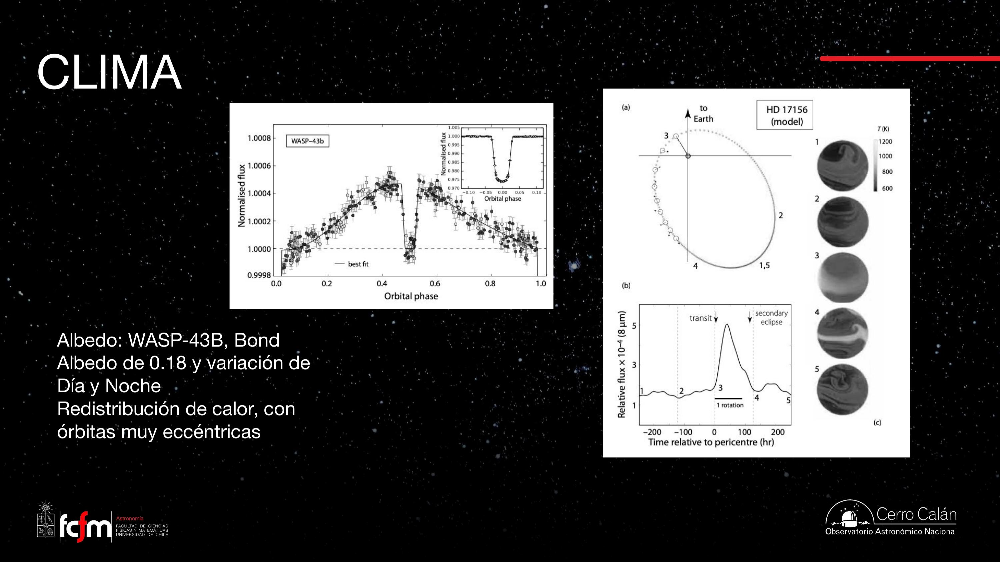
Una compañera de doctorado del profesor descubrió, con Spitzer, que el punto más brillante de un hot Jupiter no estaba justo frente a la estrella, sino corrido. El planeta está anclado por marea (siempre da la misma cara a su estrella), pero su atmósfera tiene vientos muy fuertes que arrastran el calor antes de que pueda re-irradiarse. Una sola observación de tiempo de eclipse reveló la circulación atmosférica global.
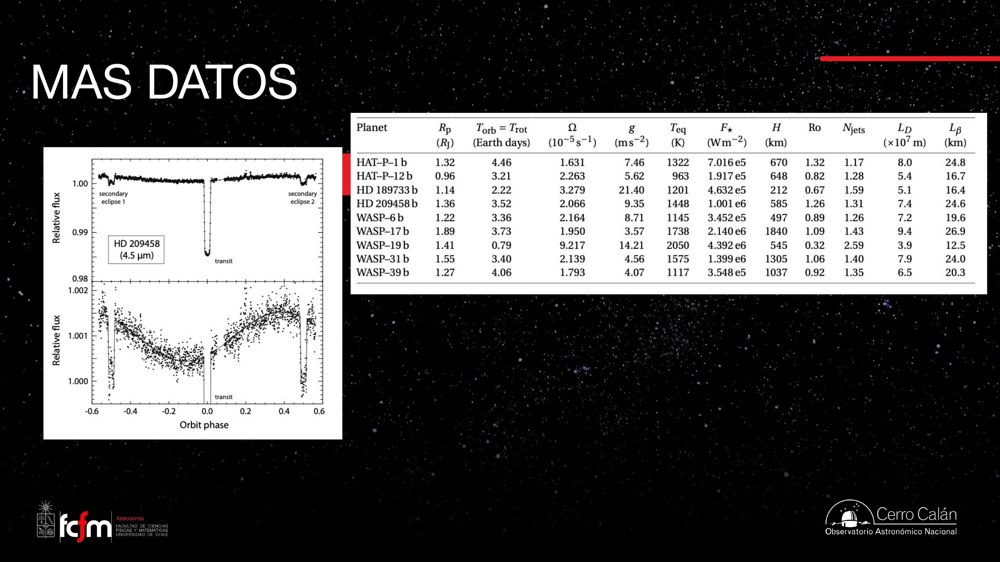
Detectabilidad: del Hubble al James Webb
Qué planetas son alcanzables, y por qué el JWST multiplicó los blancos posibles.
Que una atmósfera sea detectable depende de dos cosas: cuán brillante es la estrella (más fotones = mejor) y cuán grande es la señal de transmisión por altura de escala (en ppm). Las estrellas anfitrionas favoritas son brillantes pero pequeñas comparadas con su planeta, lo que maximiza el contraste.
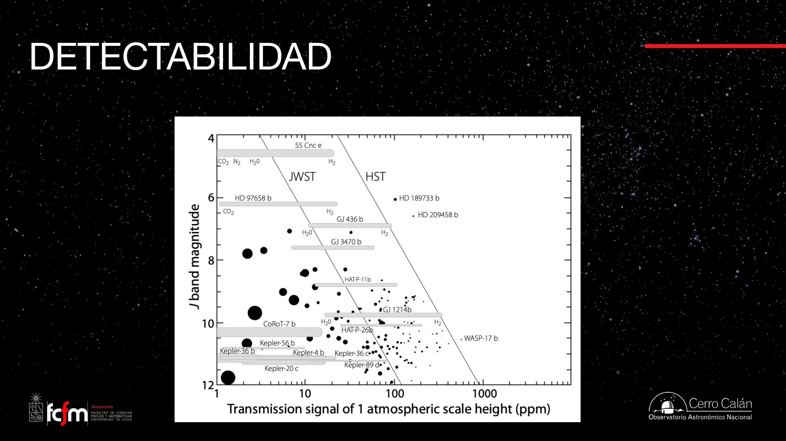
El JWST tiene unas cinco misiones principales; una de ellas es tomar espectros de exoplanetas. Hay una cola de planetas esperando turno. Vienen más misiones (p. ej. Roman) que poblarán aún más este diagrama. La diferencia clave del JWST es su tamaño y sensibilidad en el infrarrojo, donde el contraste planeta/estrella es más favorable que en el visible.
WASP-39b: el caso estrella del JWST
El JWST midió la atmósfera del hot Jupiter WASP-39b con varios instrumentos, detectando claramente CO2 (la primera detección inequívoca en un exoplaneta), además de agua, CO, SO2, sodio y potasio.
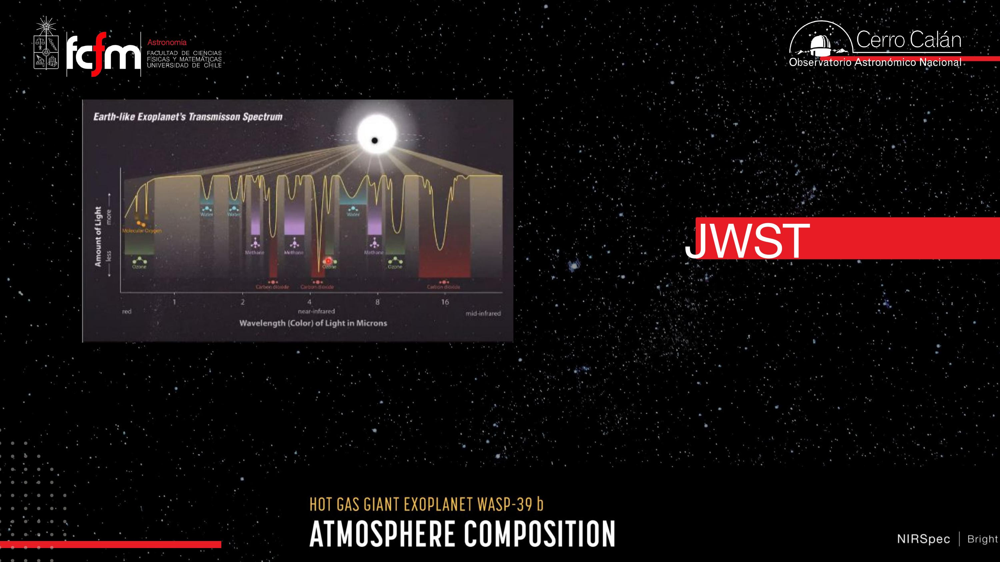
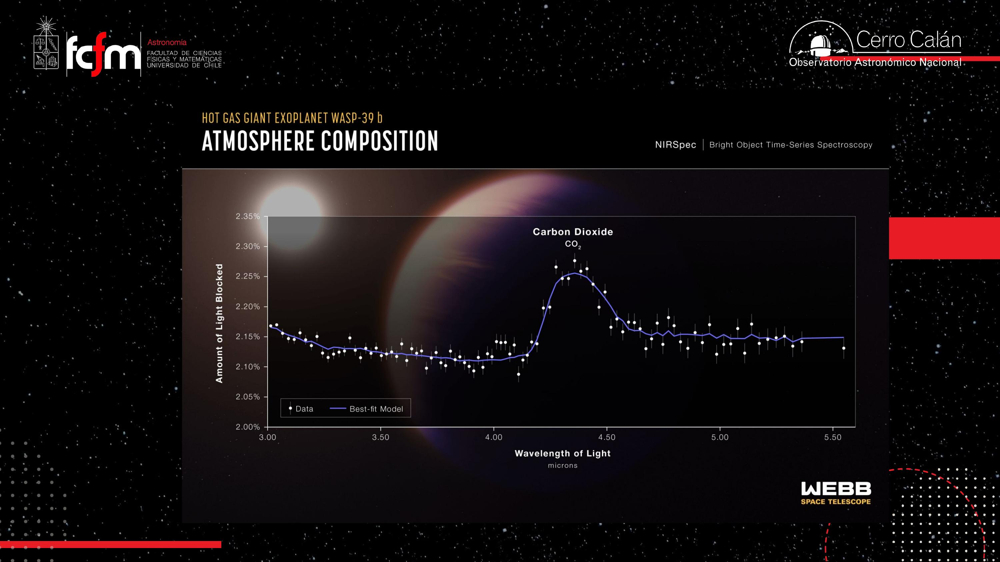
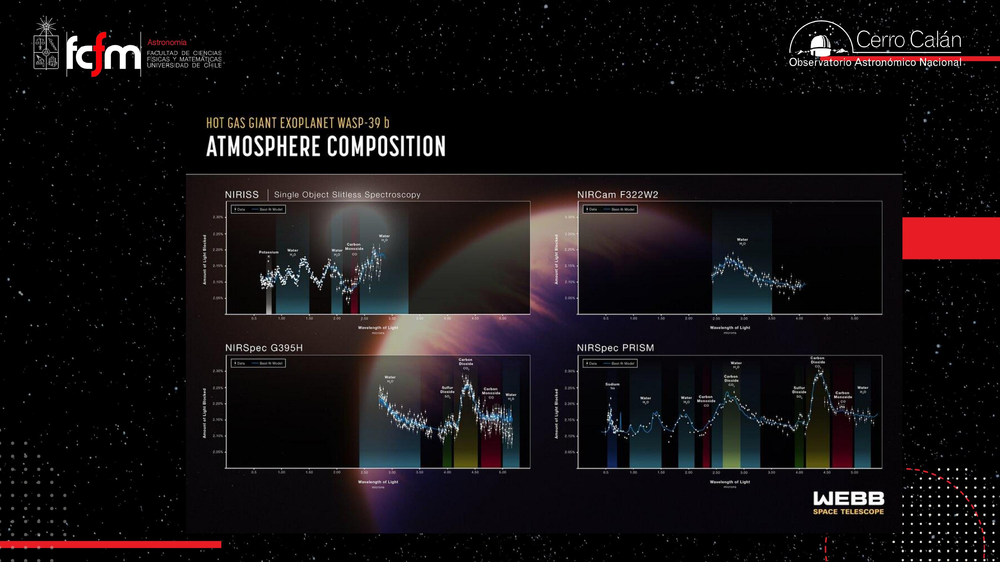
Habitabilidad: la zona del agua líquida
La «zona habitable» es útil pero plana; la realidad la complica con nubes, órbitas y mareas.
La zona habitable es la franja alrededor de una estrella donde un planeta rocoso podría tener agua líquida en superficie (la química de la vida que conocemos es soluble en agua). Se aleja de la estrella cuanto más caliente y luminosa sea ésta. En el Sistema Solar: Venus está un poco dentro (demasiado caliente), la Tierra al centro, y Marte en el borde exterior frío.
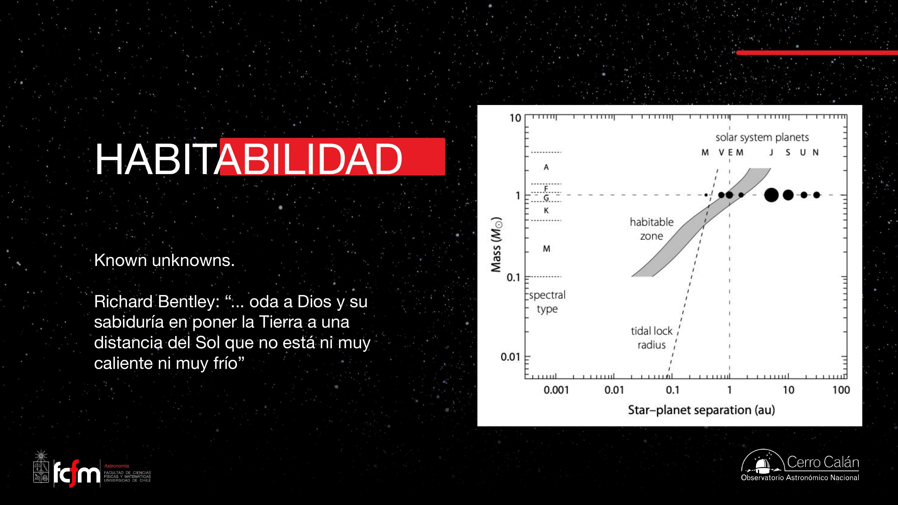
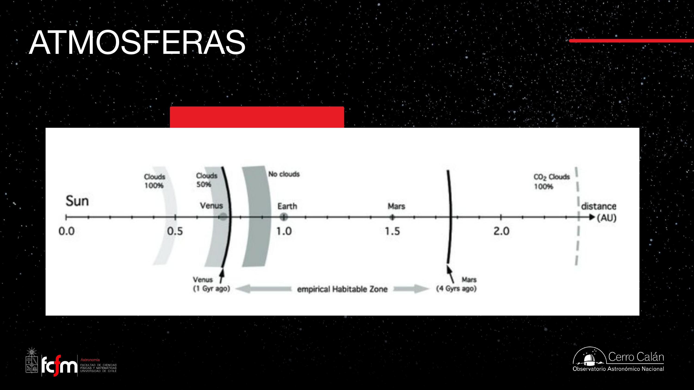
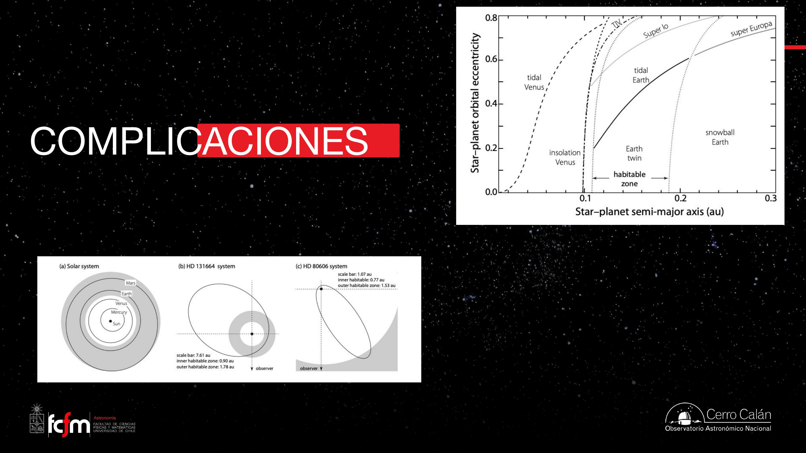
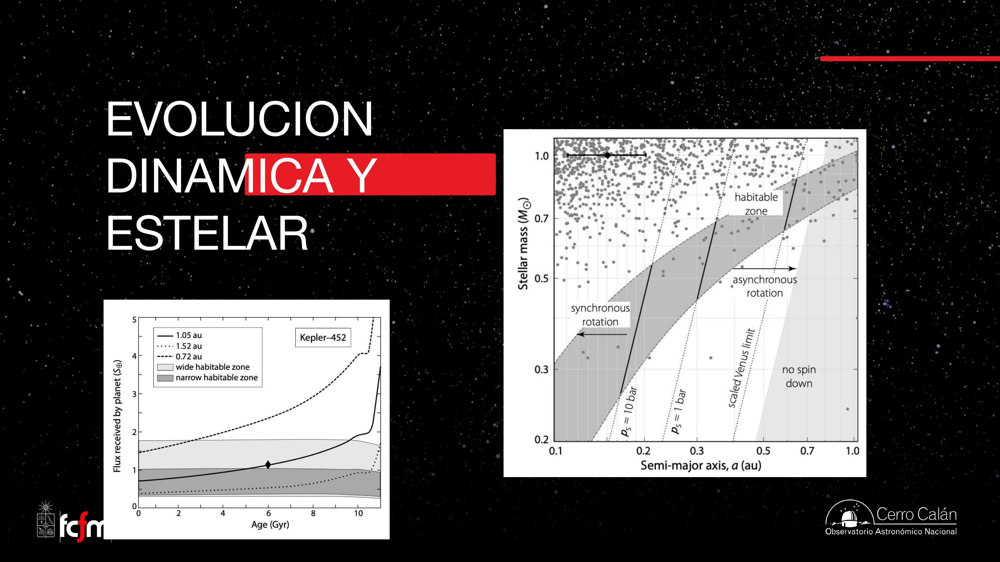
En un planeta anclado por marea (como Mercurio, con una cara a ~400 °C y otra muy fría), uno «elige» su temperatura caminando hacia el terminador. Y no solo los planetas importan: hay lunas con agua líquida bajo el hielo (cerca de Júpiter) que podrían ser habitables aunque no entren en la definición clásica de zona habitable. El profesor lo conecta con Pandora de la película Avatar: una luna habitable orbitando un gigante.
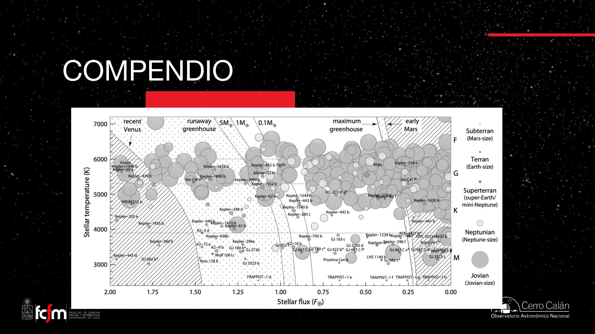
Biofirmas y la Tierra a través del tiempo
El oxígeno terrestre es biológico… pero en otro planeta no lo sería necesariamente.
Una biofirma es una huella espectral que sugiere vida. En la Tierra, el oxígeno molecular (O2) y el ozono (O3) tienen origen biológico: hace miles de millones de años, las cianobacterias fueron transformando lentamente el metano de origen volcánico, acumulando oxígeno. Toda la atmósfera oxigenada de la Tierra es, literalmente, un producto de la vida —es «inequívocamente biológica»—.
El profesor advierte que no puede verificar todas las cifras, pero el orden de magnitud es ilustrativo: las cianobacterias tardaron millones de años en acumular una fracción pequeña del oxígeno actual, mientras que la biosfera vegetal de hoy podría reponer todo el O2 atmosférico (~21%) en escalas de ~mil años. La lección es la terraformación natural: la vida cambió la atmósfera del planeta entero. (Cifras a tomar con cautela: provienen de la transcripción y el propio profesor las marca como inciertas.)
Si encontramos O2 en otro planeta, no implica automáticamente que haya vida: aunque en la Tierra sea biológico, hay procesos abióticos que pueden generarlo. El caso emblemático es la fosfina en Venus (anunciada hace algunos años): en la Tierra esa molécula se asocia a la vida, lo que causó gran revuelo, pero su origen sigue en disputa. Buscar vida es buscar combinaciones improbables de gases, no una sola molécula.
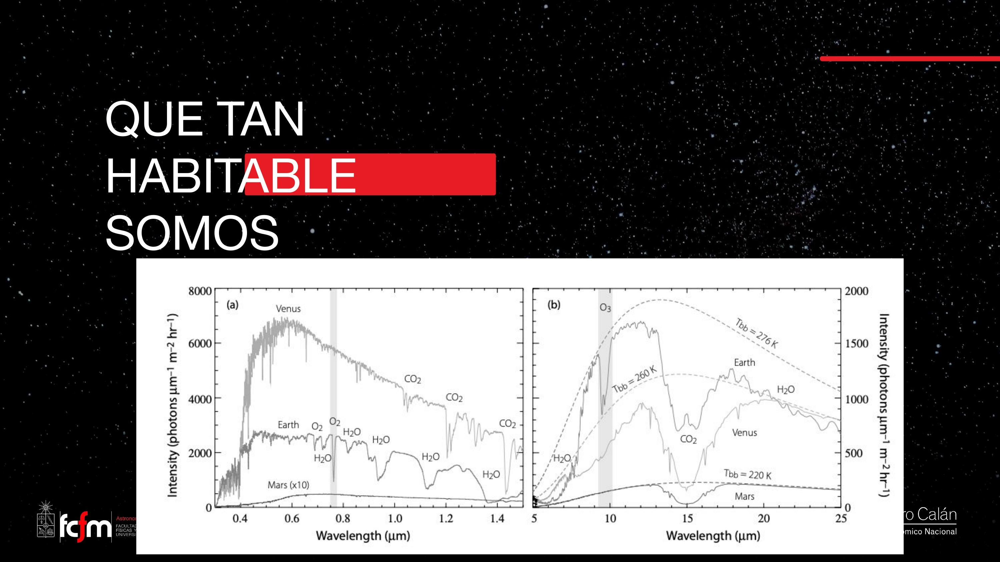
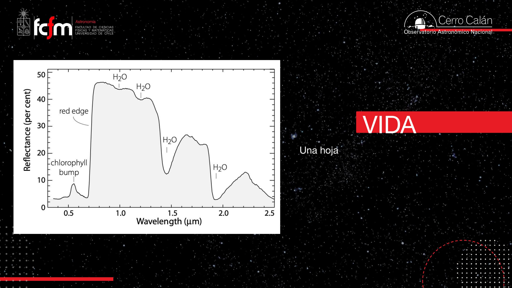
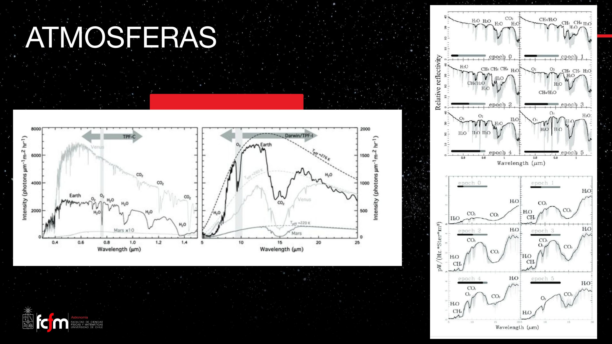
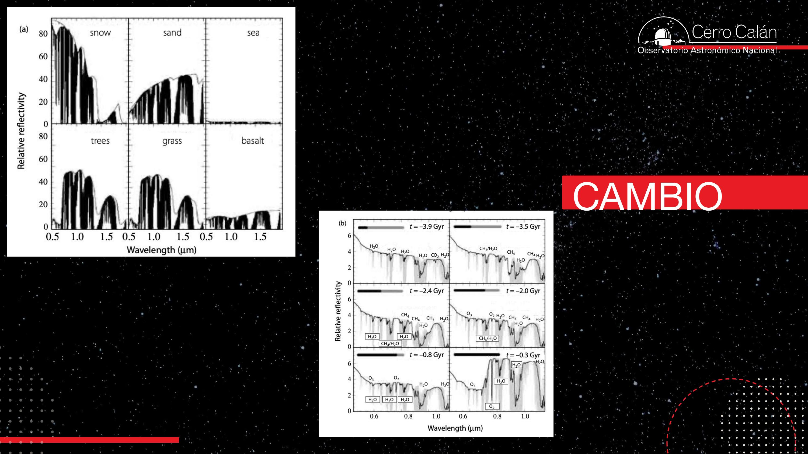
Más allá de la bioquímica, se especula con vida inteligente: señales de radio rebotadas en atmósferas, técnicas de SETI, o la ficción de El problema de los tres cuerpos (usar la estrella como amplificador para enviar mensajes). Cierre de la clase: medir incluso lo más básico de una atmósfera —su altura de escala, sus bandas moleculares— abre la puerta a química, clima, habitabilidad y, quizás, vida. La próxima sesión continúa con observación práctica (GOTO).
Conceptos clave
Tabla de repaso rápido.
| Concepto | Qué es / valor | Por qué importa |
|---|---|---|
| Ley de gases ideales | Relaciona presión, densidad y temperatura del gas | |
| Altura de escala H | Cada H, la presión cae en un factor e; mide cuán «esponjosa» es la atmósfera | |
| Ley barométrica | Decaimiento exponencial de la presión con la altura | |
| Capas atmosféricas | Troposfera, estratosfera, mesosfera, termosfera | Se definen por el perfil temperatura–presión |
| Bandas moleculares | Vibración + rotación + flexión de moléculas | Huella química (H2O, CO, CO2, CH4) de la atmósfera |
| Tránsito primario | Espectro de transmisión = A − B | La luz atraviesa la atmósfera y se absorbe |
| Tránsito secundario | Espectro de emisión = C − D | Mide la luz emitida/reflejada por el planeta |
| Profundidad óptica | Ópticamente grueso vs. delgado | Cuánto absorbe la atmósfera depende de la densidad |
| Señal de transmisión | (ppm) | Define qué atmósferas son detectables (HST vs JWST) |
| Albedo de Bond | ≈ 0,18 (WASP-43b, HD 209458b) | Fracción de luz reflejada; clima y nubes |
| Curva de fase / vientos | Punto caliente corrido | Revela circulación atmosférica y anclaje de marea |
| Zona habitable | Franja con agua líquida en superficie | Se aleja al subir T/L estelar; depende de nubes, órbita y marea |
| Biofirma (O2/O3) | En la Tierra es biológica (cianobacterias) | Pero no es prueba de vida: hay falsos positivos |
| Red edge | Salto de reflectancia de la vegetación | Firma de superficie buscada como biofirma |
| WASP-39b (JWST) | Detección clara de CO2 + agua, CO, SO2 | Hito de la espectroscopía de exoplanetas |
Exámenes de práctica
10 exámenes de 5 preguntas (3 de alternativas autocorregibles + 2 de respuesta escrita).
- Examen 01Gas ideal y altura de escala
- Examen 02Capas y perfiles
- Examen 03Espectros del Sistema Solar
- Examen 04Transmisión y emisión
- Examen 05Procesos radiativos
- Examen 06Modelos de atmósferas
- Examen 07Transmisión y espectrofotometría
- Examen 08Clima, albedo y vientos
- Examen 09Detectabilidad y JWST
- Examen 10Habitabilidad y biofirmas